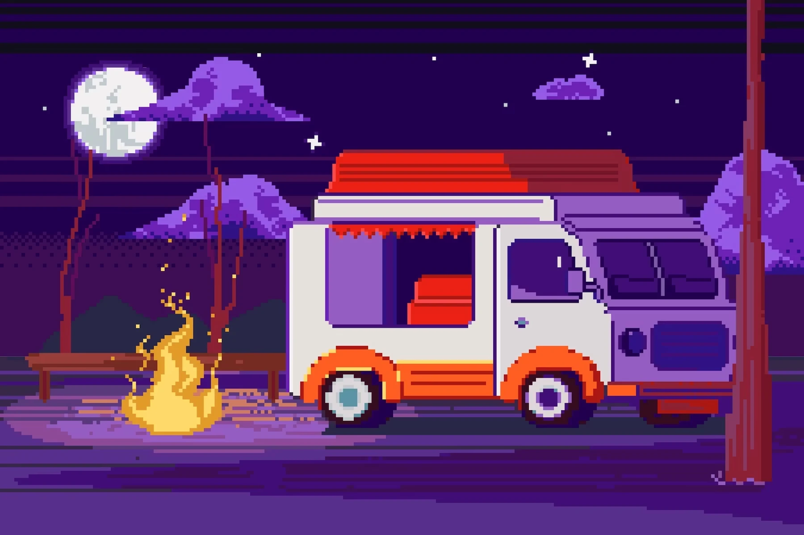

Фритрек и нулевой спринт: Подготовка к работе

СтартЭто было самое начало пути. Впереди — незнакомые технологии, новые задачи и много практики. Главное — решиться начать.
Продолжаю учиться, пробовать новые подходы и замечать свой прогресс.